主机信息
| 用途 | 操作系统 | 主机名 | 域名 | IP地址 | DNS |
|---|---|---|---|---|---|
| 根域 | windows 2012 | DC1 | adlab.com | 10.10.10.50 | 127.0.0.1 |
| 辅域 | windows 2019 | DC4 | adlab.com | 10.10.10.20 | 127.0.0.1和10.10.10.50 |
| 子域 | windows 2012 | DC2 | sec.adlab.com | 10.10.11.50 | 127.0.0.1和10.10.10.50 |
| 树域 | windows 2012 | DC3 | ad.com | 10.10.12.50 | 127.0.0.1和10.10.10.50 |
一、安装域控
1、准备工作
如果域内主机都是克隆过来的，则需要重置SID。因为克隆过来的SID一样 （SID可以在cmd中whoami/all查看）所以每一次克隆后都要进行这一步在win+r 进行搜索sysprep 双击 等待重启
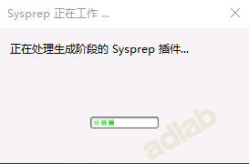
2、修改主机名

3、安装域
打开服务器管理器，添加角色和功能。

出现“添加角色和功能”界面，下一步 。
根据提示操作，下一步。

选择添加AD域服务（Active Directory 域服务），同时添加所需功能。

根据提示操作，下一步
根据提示操作，下一步
根据提示操作，安装

等待安装完成

安装完成

4、配置域
点击服务器管理器左侧“AD DS” 、点击黄色提示部分中的更多。

进入AD域服务器配置向导，选择 “添加新林” ，输入域，点击下一步。
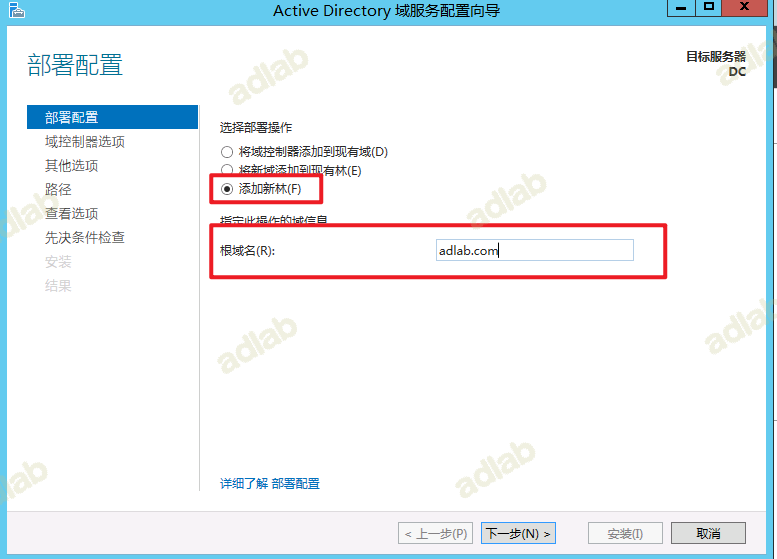
填写密码，下一步 。
提示DNS无法创建，不用管，继续下一步
根据提示操作，下一步
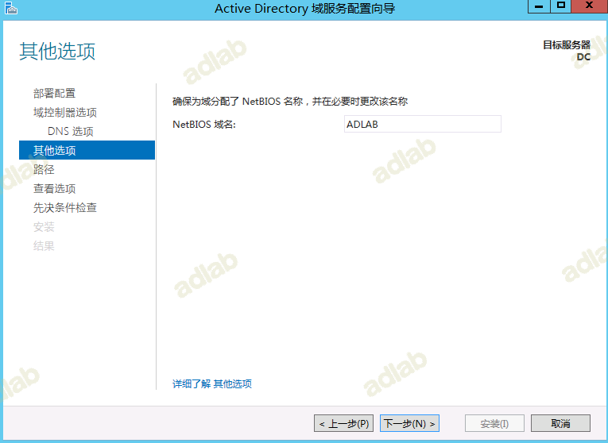
安装路径，默认，下一步

查看选项，默认，下一步

点击安装 。此过程可能会报错，提示登陆用户没有设置密码，去设置给当前登陆用户（Administrator）设置一个密码，然后回来点击 “重新运行先决条件检查” 即可！
安装完成，会提示注销重启 （此过程比较漫长，耐心等待）
重启之后存在以下几个说明安装成功
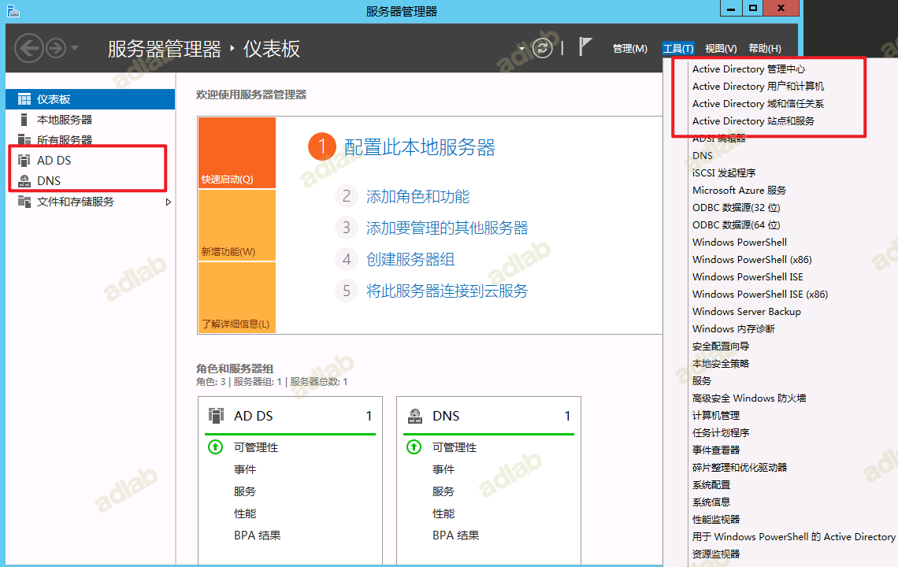
接下来我们需要同步配置一下域控制器的 DNS 区域传输：
现在主域控制器和 DNS 集成，为了让后期搭建完辅域控制器的 DNS 同步主域控制器 DNS ，需要把主域控制器的 DNS 服务器_msdcs.adlab.com和 adlab.com 的起始授权机构(SOA)区域传送设置成允许:
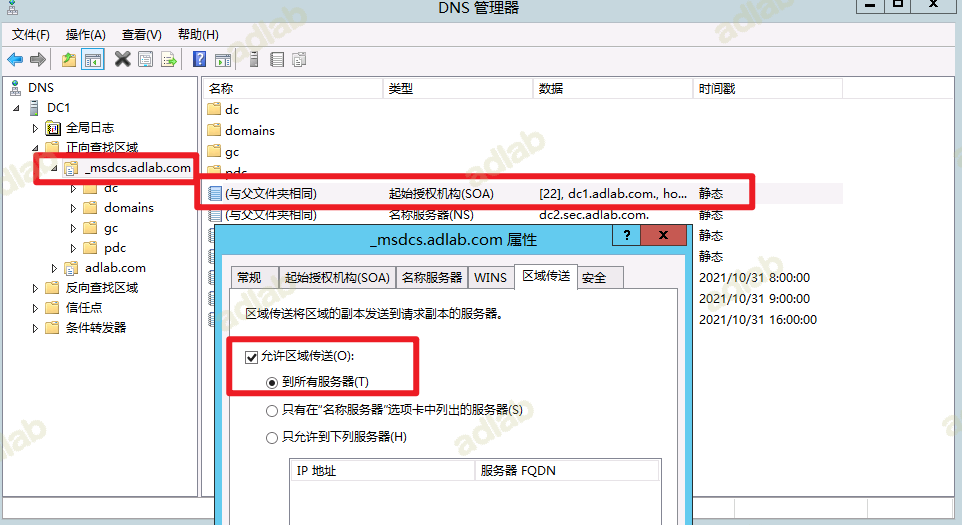
5、新建域管理员
打开"Active Directory 用户和计算机"
选择Users,新建用户
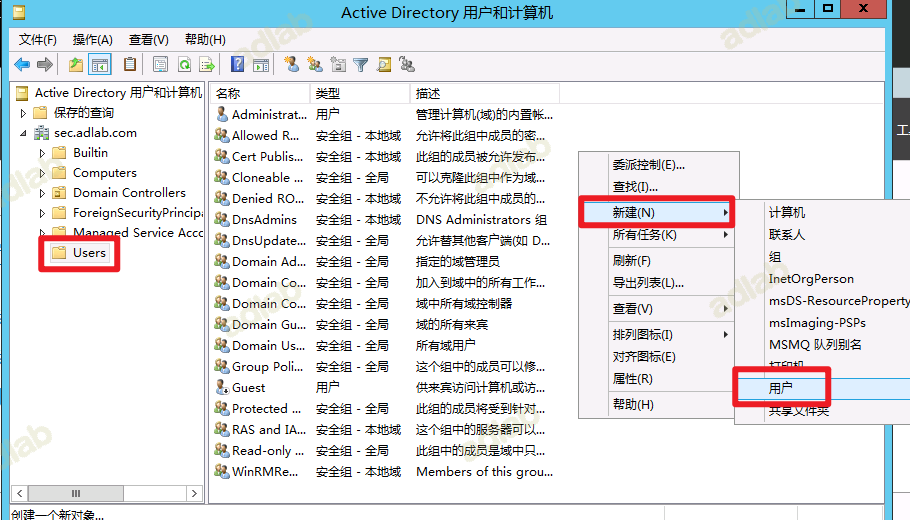
输入"用户登录名"

输入密码，点击"密码永不过期"
点击完成
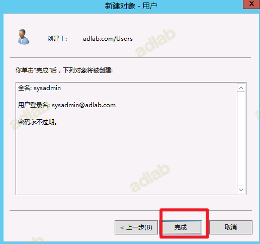
找到刚刚新建的用户，右键选择"属性"
将用户新增管理员组，点击添加
点击"高级"
点击"立即查找"
依次添加以下三个组
Domain Admins; Enterprise Admins; Schema Admins
添加之后，点击完成
二、辅域搭建
1、修改主机名
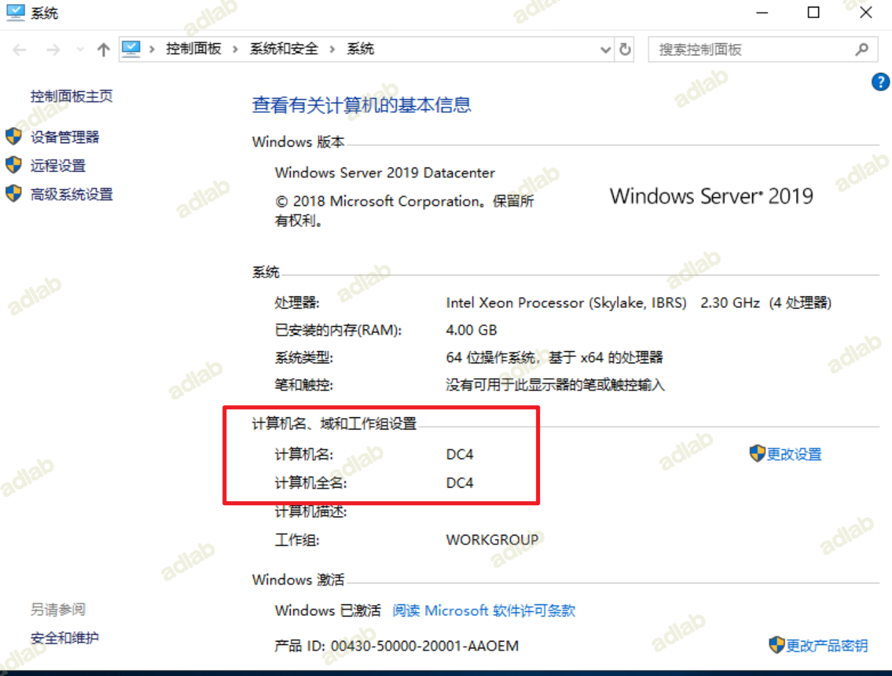
2、修改DNS
3、安装域

出现“添加角色和功能”界面，下一步 。

根据提示操作，下一步。

选择添加AD域服务（Active Directory 域服务），同时添加所需功能。

根据提示操作，下一步

根据提示操作，下一步

根据提示操作，安装
等待安装完成
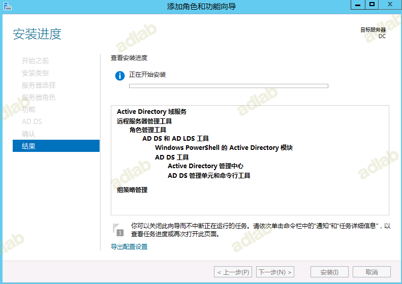
安装完成

4、配置域
点击服务器管理器左侧“AD DS” 、点击黄色提示部分中的更多。
填写刚才新建具有权限的用户，不使用默认的administrator
选择域，确定
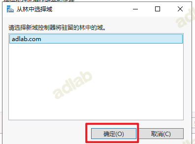
完成域确认后，下一步

保持默认，填写还原模式密码
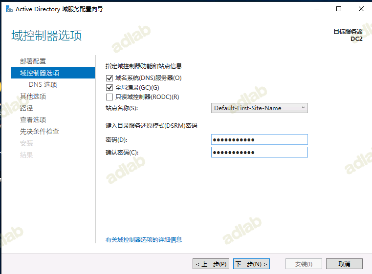
下一步
选择dc01（由于测试环境，没有任何数据，此处不需要“从介质安装”，多站点，数据库文件大时，使用该项）
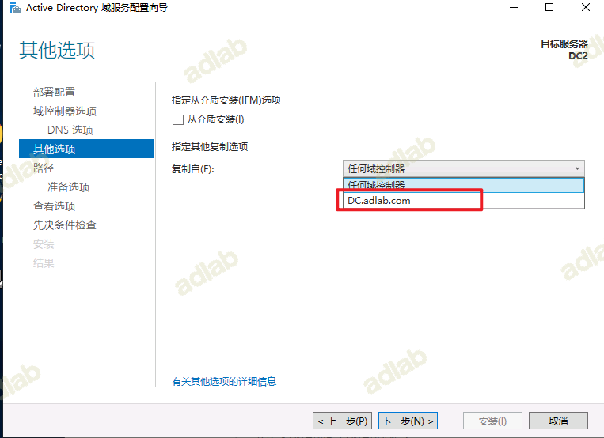
默认路径，下一步

下一步

安装

安装完成后，重启

登录

安装后用户和计算机、站点和服务中，都看到了二台域控制器。
到些主辅二台域控制器搭建完成
二、子域控制器搭建
搭建子域的操作系统只能大于等于根域的操作系统，不能低于根域的操作系统，这里我推荐都用相同的操作系统。
1、修改主机名
首先修改主机名
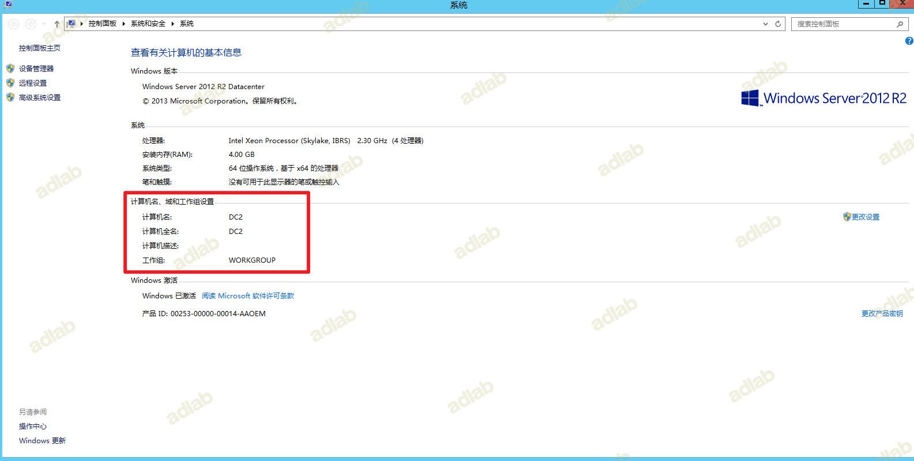
2、修改DNS
1、搭建⼦域控制器前需要先把 DNS 指向主域控制器的 IP地址，然后委派完DNS再把⼦域控制器DNS指向⾃⼰：
⽗域控制器：adlab.com
⼦域控制器：sec.adlab.com
子域控制器：
IP：10.10.11.50
子网掩码：255.255.255.0
默认网光：10.10.11.254
首选DNS：10.10.10.50
3、安装域
打开服务器管理器，添加角色和功能。
出现“添加角色和功能”界面，下一步 。
根据提示操作，下一步。
选择添加AD域服务（Active Directory 域服务），同时添加所需功能。
根据提示操作，下一步
根据提示操作，下一步
根据提示操作，安装
等待安装完成
安装完成
4、配置域
点击服务器管理器左侧“AD DS” 、点击黄色提示部分中的更多。

部署的时候需要设置:
选择部署操作：将新域添加到现有林选择域类型：⼦域 ⽗域名：adlab.com 子域名：sec.adlab.com 凭据：填写⽗域的⽤户名密码即可

输入密码，点击下一步
域功能级别：windows Server 2012指定域控制器功能和站点信息：域名系统（DNS）服务器 、全局编录 填写新的DSRM密码:Redteam.com
默认下一步
NetBIOS 我们默认用系统设置的就好，点击”下一步“

默认下一步

默认下一步
来到”安装”界面，等待安装成功机器会自动重启：
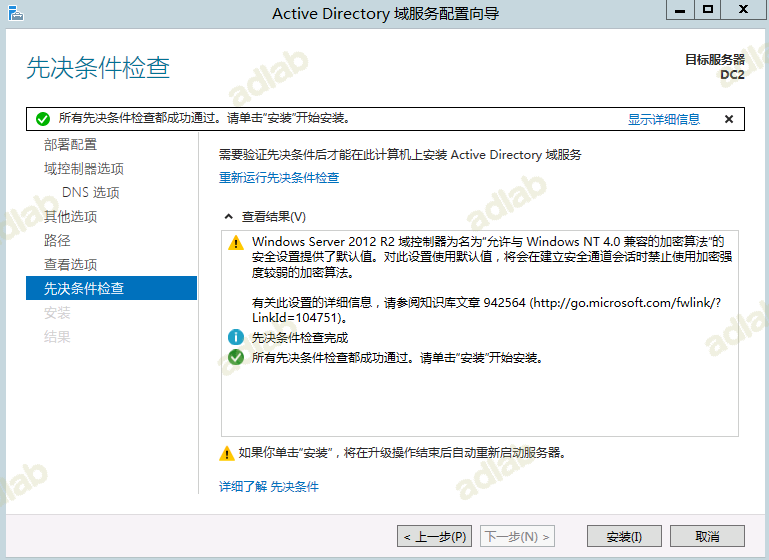
配置好之后，在子域中ping 父域
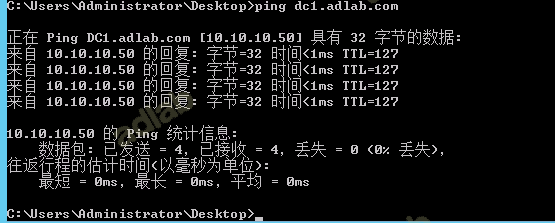
至此子域配置完成
三、树域搭建
搭建树域的操作系统只能大于等于根域的操作系统，不能低于根域的操作系统，这里我推荐都用相同的操作系统。
1、修改主机名
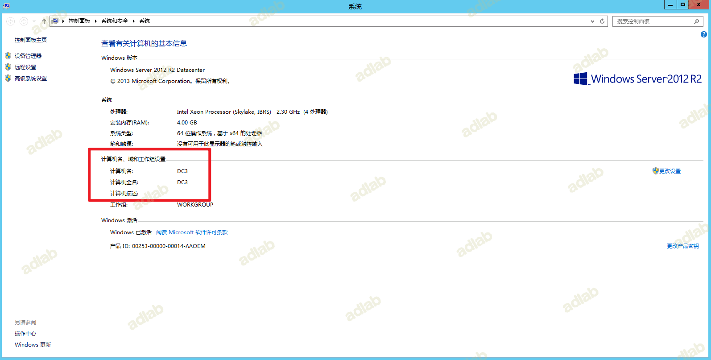
2、设置DNS
⽗域控制器：adlab.com
⼦域控制器：ad.com
子域控制器：
IP：10.10.12.50
子网掩码：255.255.255.0
默认网光：10.10.12.254
首选DNS：10.10.10.50
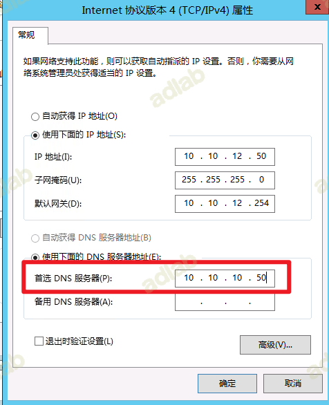
3、安装域
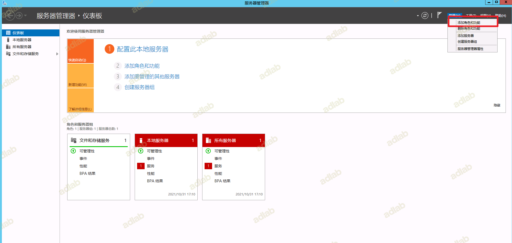
出现“添加角色和功能”界面，下一步 。
根据提示操作，下一步。
根据提示操作，下一步。
选择添加AD域服务（Active Directory 域服务），同时添加所需功能。
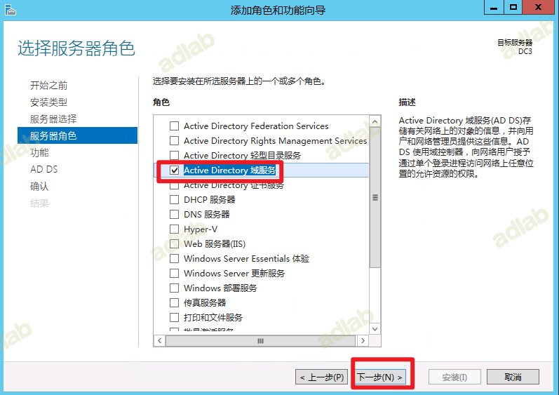
根据提示操作，下一步
根据提示操作，下一步
根据提示操作，安装
点击"将此服务器提升为域控制器"
4、配置域
根据以下顺序填写
1.选择"树域"
2.先输入凭据，这里要输入域名adlab.com\sysadmin
3.输入新域名
填写密码，下一步 。
提示DNS无法创建，不用管，继续下一步
根据提示操作，下一步
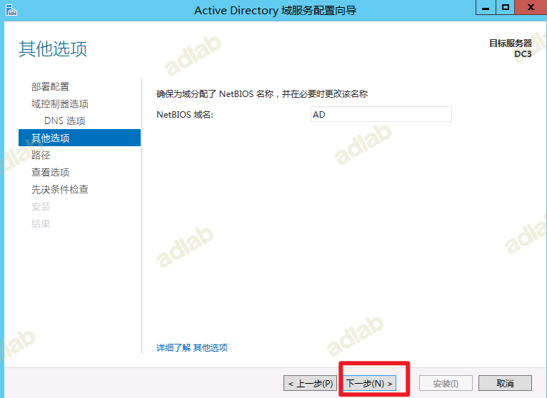
安装路径，默认，下一步
查看选项，默认，下一步
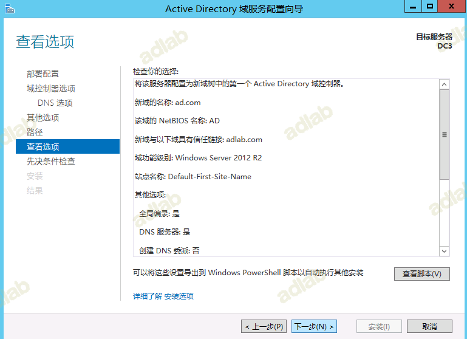
点击安装 。此过程可能会报错，提示登陆用户没有设置密码，去设置给当前登陆用户（Administrator）设置一个密码，然后回来点击 “重新运行先决条件检查” 即可！
5、检查配置
安装好之后，ping根域
ping dc1.adlab.com
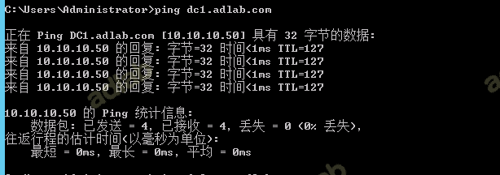
两者之间也是互相信任的
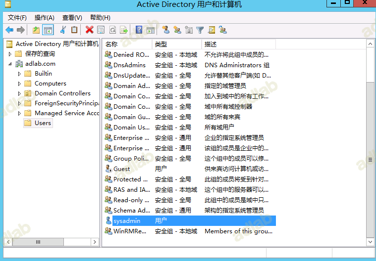
说明两个域是互相信任的
bug汇总
1.域名无法解析
通过树域ping根域ping不通或者找不到域名，在根域的DNS中新增一个条件转发器
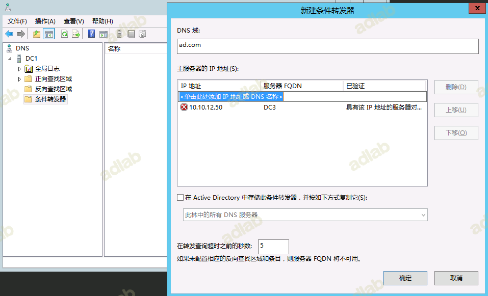
若不行在另外一个域中的DNS中新增一个条件转发器
2.无法联系到一个主域控制器（PDC）仿真器。
在dc上运行命令dcdiag /v，看看有无任何错误信息。 请运行命令repadmin /syncall，查看AD复制是否正常。
参考地址
https://social.technet.microsoft.com/Forums/msonline/en-US/606538d5-18dc-409b-b21a-83a29a654681/26080278613285231995210401996820010200272249525511210462212065?forum=windowsserversystemzhchs
3.找不到命名信息
点击域内服务时，提示以下内容
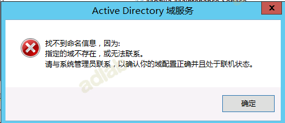
打开服务，检查Netlogon服务的状态
如果服务未启动或者暂停等，则需要手动将该服务启动
参考地址
https://mp.weixin.qq.com/s/2GKMFKmjCF_vht8hKl4iFw
https://www.bilibili.com/read/cv13367444
https://sec-in.com/article/1140
https://www.office26.com/windows/windows_17514.html
https://docs.microsoft.com/zh-cn/windows-server/identity/ad-ds/deploy/install-a-new-windows-server-2012-active-directory-child-or-tree-domain--level-200-